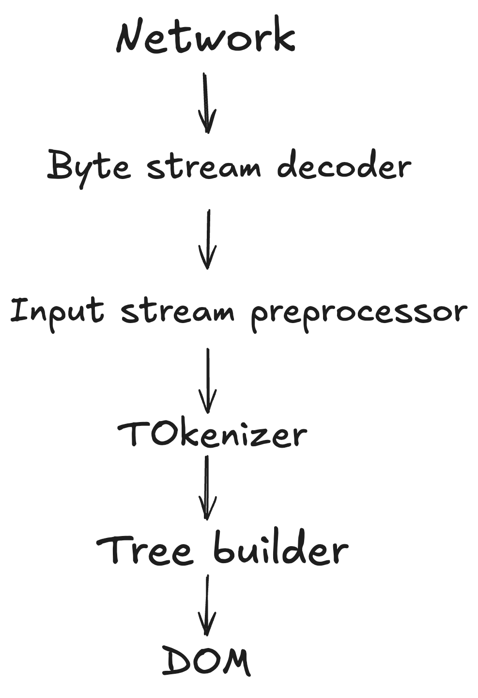
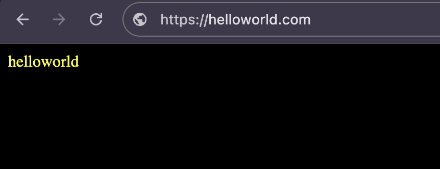
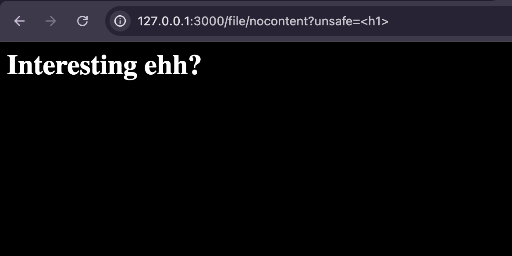
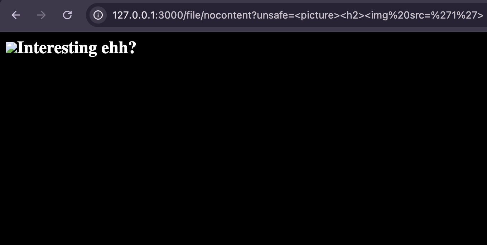
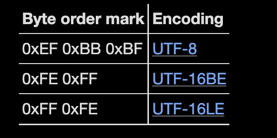

HTML Parser & Quirks - A Cookbook: A collection of recipes exploring HTML parsing behaviors, treating parsing techniques as ingredients to craft structured data from raw markup. 🍽️📜
When you visit a webpage, you see the final polished visual content displayed on your screen, but have you ever wondered about the fascinating journey that transforms raw code into the interactive, dynamic page you're experiencing? Behind the scenes, your browser orchestrates a sophisticated multi-stage process that converts simple text-based markup into a fully functional web application. This transformation involves several critical steps that work together like a well-oiled machine - from parsing the initial HTML structure to applying visual styles, calculating precise layouts, and finally painting every pixel onto your display. Let's break down these fundamental steps in simple, digestible terms to understand the magic that happens every time you load a webpage.
1. Parsing [Building the DOM] – The very first thing the browser does is read the raw HTML code of the webpage. It then transforms this code into a structured format known as the DOM, or Document Object Model. Think of the DOM as a family tree for your webpage, where each HTML tag (like <div>, <p>, or <img>) becomes a "node" or branch in this tree. This structure allows the browser to understand the relationships between different parts of the page—such as which elements are inside others—and sets the foundation for everything else that happens next. By building the DOM, the browser creates a map it can use to display, style, and interact with the content you see.
2. Styling [Applying CSS] – After building the structure of the page, the browser needs to decide how everything should look. This is where CSS (Cascading Style Sheets) comes in. The browser reads all the CSS rules and determines the visual appearance of each element—such as its colors, fonts, sizes, spacing, and more. It matches these style rules to the right elements in the DOM, making sure that headings stand out, links are colored, and buttons look clickable. This step transforms the plain structure into a visually appealing and organized page, giving each part its unique style and personality so that the website looks attractive and is easy to use.
3. Layout [Positioning Elements] – Once the browser knows what each element is and how it should look, it needs to figure out exactly where everything should go on the page. This process is called “layout.” The browser carefully calculates the size and position of every element—like headings, paragraphs, images, and buttons—by following the rules set by CSS and the structure of the HTML. It makes sure that nothing overlaps in a way it shouldn’t, and that all the pieces fit together neatly, no matter the size of your screen or window. This step is like arranging the pieces of a puzzle so that the final picture looks just right for you.
4. Painting [Rendering Pixels] – In this final stage, the browser gathers everything it has learned from parsing the HTML, applying CSS styles, and calculating the layout. It then translates all this information into actual pixels—the tiny dots that make up the images and text you see on your screen. This process is called “painting.” The browser carefully draws each element, layer by layer, so that the web page appears exactly as intended. Only after this step does the content become visible and interactive for you, the user. In other words, painting is the moment when all the behind-the-scenes work comes together and the web page finally appears before your eyes.
HTML parsing is the process of reading an HTML document and converting it into a structured format that can be processed by a browser,Parsing a HTML document goes through the below stages !

Example:<!doctype html><p>helloworld
Let's take this simple example and walk through how the parser processes it step by step, showing you exactly what happens behind the scenes when the browser encounters even the most basic HTML content.
Step 1: Bytes travel over the network and a decoder converts them into a stream of code points (the individual characters that make up the text). This is like translating a foreign language into something the browser can understand.
Step 2: The tokenizer carefully walks through this stream of code points, character by character, and identifies meaningful pieces called "tokens." It's like breaking down a sentence into individual words and punctuation marks.
Step 3: From our example, the tokenizer generates specific tokens: a doctype token (indicating this is HTML5), a start tag token for the <p> element, and a series of character tokens for "helloworld".
Step 4: The tree builder takes these tokens and constructs the final DOM structure. It's like building a family tree where each element has its proper place and relationships.
Document
└── html
└── body
└── p
└── #text: helloworld

Even this simple "helloworld" text that you see on screen has to go through all these complex parsing stages before it can be displayed! This shows just how much work the browser does behind the scenes to make web pages work smoothly.
The HTTP Content-Type header is like a label that tells the browser exactly what type of content it's about to receive—whether it's HTML, an image, a PDF, or any other file format. This header acts as a crucial communication tool between the web server and your browser, ensuring that the content is interpreted and displayed correctly. But what happens when this important label is missing? How does the browser figure out what to do with the content it receives?
This is where content sniffing comes into play—a fascinating process where the browser becomes a detective, examining the actual content to determine its type. Let's explore this through some practical examples that will show you exactly how this works in real-world scenarios.
Example 1: Let's start by testing what happens when we try to render a simple <h1> heading tag without a content-type header:
As expected, the <h1> tag renders perfectly as HTML! This makes sense because <h1> is a common HTML element that browsers recognize immediately.
Example 2: Now let's try something more interesting—what happens when we test a <h2> tag?
Surprisingly, the <h2> tag is rendered as plain text instead of HTML! This unexpected behavior reveals something important about how browsers work.
This difference in behavior occurs because browsers use a sophisticated set of rules and algorithms to "sniff" or detect content types when the Content-Type header is missing. These rules are implemented in code that acts like a security guard, checking for specific patterns and tags that indicate HTML content.
Below is the actual code from a browser's HTML sniffer. This code tells the browser which specific tags should trigger HTML rendering when no content-type is specified:
// Our HTML sniffer differs slightly from Mozilla. For example, Mozilla will
// decide that a document that begins "<!DOCTYPE SOAP-ENV:Envelope PUBLIC/" is
// HTML, but we will not.
#define MAGIC_HTML_TAG(tag) \
MAGIC_STRING("text/html", "<" tag)
static const MagicNumber kSniffableTags[] = {
// XML processing directive. Although this is not an HTML mime type, we sniff
// for this in the HTML phase because text/xml is just as powerful as HTML and
// we want to leverage our white space skipping technology.
MAGIC_NUMBER("text/xml", "<?xml"), // Mozilla
// DOCTYPEs
MAGIC_HTML_TAG("!DOCTYPE html"), // HTML5 spec
// Sniffable tags, ordered by how often they occur in sniffable documents.
MAGIC_HTML_TAG("script"), // HTML5 spec, Mozilla
MAGIC_HTML_TAG("html"), // HTML5 spec, Mozilla
MAGIC_HTML_TAG("!--"),
MAGIC_HTML_TAG("head"), // HTML5 spec, Mozilla
MAGIC_HTML_TAG("iframe"), // Mozilla
MAGIC_HTML_TAG("h1"), // Mozilla
MAGIC_HTML_TAG("div"), // Mozilla
MAGIC_HTML_TAG("font"), // Mozilla
MAGIC_HTML_TAG("table"), // Mozilla
MAGIC_HTML_TAG("a"), // Mozilla
MAGIC_HTML_TAG("style"), // Mozilla
MAGIC_HTML_TAG("title"), // Mozilla
MAGIC_HTML_TAG("b"), // Mozilla
MAGIC_HTML_TAG("body"), // Mozilla
MAGIC_HTML_TAG("br"),
MAGIC_HTML_TAG("p"), // Mozilla
};
// ...
// Returns true and sets result if the content appears to be HTML.
// Clears have_enough_content if more data could possibly change the result.
static bool SniffForHTML(base::StringPiece content,
bool* have_enough_content,
std::string* result) {
// For HTML, we are willing to consider up to 512 bytes. This may be overly
// conservative as IE only considers 256.
*have_enough_content &= TruncateStringPiece(512, &content);
// We adopt a strategy similar to that used by Mozilla to sniff HTML tags,
// but with some modifications to better match the HTML5 spec.
base::StringPiece trimmed =
base::TrimWhitespaceASCII(content, base::TRIM_LEADING);
// |trimmed| now starts at first non-whitespace character (or is empty).
return CheckForMagicNumbers(trimmed, kSniffableTags, result);
}
Quick Question :
Based on the code above, if no content type is defined, are only the HTML elements/tags listed below responsible for rendering HTML, or can rendering be forced using other methods or elements?
<!DOCTYPE html>,<script>,<html,<!-->,<head>,<iframe>,<h1>,<div>,<font>,<table>,<a>,<style>,<title>,<body>,<br>,<p>

Interesting Discovery: The picture element works perfectly! But wait—it's not explicitly defined in the sniffer code above. So how does it work?
The answer lies in how the sniffer algorithm operates. Since the <picture> tag starts with the letter 'p' and the code includes MAGIC_HTML_TAG("p"), any tag that begins with 'p' (like 'picture', 'progress', 'param', etc.) will trigger HTML rendering. This is a clever but potentially exploitable feature of the content sniffing mechanism.
I discovered this fascinating behavior while working on a challenge from the Dreamhack wargame Small File Storage! Special thanks to my friends 0xAlessandro and Yuu for the insights.
To dive deeper into this topic, visit Mime Sniffing for a comprehensive exploration of content type detection mechanisms.
HTML parser need to know the definite encoding to operate on an input byte stream of the document.
The character encoding can be defined using meta tag <meta charset="utf-8"> or it can be specified at the transport layer, HTTP Content-Type with charset parameter which gives the encoding of the document.
The document can also start with Byte Order Mark (BOM),If the document starts with the bytes given in the below column,then return the encoding correspondingly.
The precedence order for character encoding is Byte Order Mark (BOM) > HTTP Content-Type Header > Meta Tag in HTML rendering.
Before the HTML parser starts,a prescan of the byte stream can take place in an attempt to find the character encoding declaration.The prescan is usually done on the first 1024 bytes and there's a requirement for documents to include encoding declaration within 1024 bytes.
Quick Question :
What if no charset is defined ?
If no encoding declaration is found,then the default will usually depend on the user's locale and the most common default is windows-1252.
We can also abuse Encoding Differentials in absence of charsets, you can read more about it here Encoding Differentials: Why Charset Matters
HTML parsing is remarkably forgiving,unlike many programming languages that crash when they encounter errors, HTML parsers are designed to be resilient and user-friendly. The HTML specification provides detailed instructions on how browsers should handle various types of errors that might occur while reading an HTML document. This approach ensures that web pages can still be displayed and function properly, even when the underlying HTML code isn't perfect.
When a browser encounters HTML errors, it doesn't simply stop processing or display an error message to users. Instead, it follows a sophisticated set of recovery rules defined in the HTML specification. These rules act like a safety net, allowing the browser to intelligently fix common mistakes and continue rendering the page. This error-handling mechanism is crucial because real-world HTML is often generated by various tools, content management systems, or even written by humans who might make mistakes.
The HTML parser is particularly good at handling three common types of errors: unclosed tags, missing quotes, and incorrect tag nesting. When it encounters these issues, the parser doesn't crash or give up. Instead, it applies fixes to ensure the page can still be displayed as correctly as possible, maintaining both functionality and visual appearance.
Real-World Examples:
Example 1: Unclosed Tags
What happened: The parser encountered an opening <p> tag without a corresponding closing tag. Instead of breaking, it automatically closed the paragraph when it encountered the next element. This ensures that the content flows properly and maintains the intended structure.
Example 2: Missing Quotes
What happened: The image tag was missing quotes around its attribute values. The parser intelligently added the missing quotes, ensuring that the image element is properly formed and can be rendered correctly.
Example 3: Incorrect Nesting
What happened: The HTML had semantically incorrect nesting—a heading tag was placed inside another heading tag, which doesn't make logical sense. The parser automatically adjusted the structure to create a meaningful hierarchy, ensuring that the content is displayed in a sensible and accessible way.
This error-handling approach makes the web more robust and user-friendly. It means that even if a web developer makes a small mistake in their HTML code, users can still access and use the website without encountering frustrating error messages or broken pages. This is one of the reasons why the web has been so successful—it prioritizes user experience over strict technical perfection.
The Adoption Agency Algorithm is a process used in HTML to fix incorrect nesting of elements.
<p>1<b>2<i>3</b>4</i>5</p>